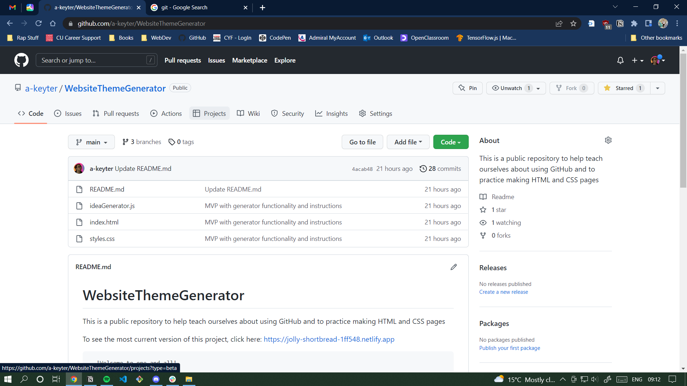

GitHub & VS Code Instructions
- If you haven't already, install VS Code
- Install Git - https://git-scm.com/
- Log in to GitHub https://github.com/
- Find the repository you want to work on / contribute to on GitHub
e.g. https://github.com/a-keyter/WebsiteThemeGenerator

- Click on 'Code' on the right hand corner:

- Copy the HTTPS link / URL from Github
- Open VS Code (if you need to close last folder, push 'crl'+'k' and then push 'f'

- Under 'Start' click on 'Clone Git Repository'
- Paste in the URL you copied from the GitHub repository:

- Create a new folder to store your copy of the repository:

- When it's loaded the repository, click 'open' in the bottom right corner
- Congratulations, you’ve cloned your first repository!